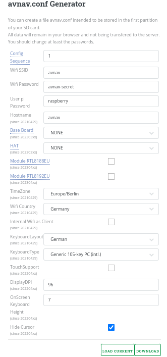

A description of the releases and download links can be found in the releases document.
If you are in a hurry - those are the current image, the daily builds and the release downloads.
To provide a "ready to go" solution there are some images for the
raspberry pi you can use.
Since version 20220421 the images do support both the "headless" working
mode - i.e. no keyboard or monitor attached to the pi - as well as the
"touch" mode - a monitor (with our without touch) is locally attached,
optionally keyboard and mouse.
AvNav is optimized for running on touch devices but you can use it on desktop systems with monitor, keyboard and mouse, too.
So the usage of the images depend on your use case. For "headless" usage the Pi is only used as a server, the display logic will run in the browser e.g. on some mobile device. In this case a Raspberry Pi 3B(+) with 1GB should be sufficient. If you would like to run a local display you should go for a Pi4 with at least 2GB of memory.
If you are looking for a complete desktop system with a lot of other applications OpenPlotter could be your choice. For running OpenPlotter I suggest a Pi4 with 4GB of RAM. 2GB will do but without a lot of room for later extension requirements.
In the past there were special AvNav Touch images. But they are not
maintained any more.
Those images are maintained by BlackSea
(many thanks...). A description is available on
his page.
The images can be downloaded from free-x
and installed on a SD card as described at http://www.raspberrypi.org/downloads
(raw images).
The images come with
new as of 20210322, extended with 20220421
Before inserting the SD card into your Raspberry (after you wrote the
image to it) you should adapt a couple of settings (especially passwords).
The images hold a configuration file "avnav.conf" in the first partition
of the SD card (boot partition). This file can be adapted using a text
editor.
This is the place to configure whether you would like to run a local
display ("touch variant").
More easily you can use a simple GUI that is provided here.
The meaning of the fields:
| name | default | description |
| Wifi SSID | avnav | The name of the Wifi network created by the raspberry. The images are prepared to create multiple networks - if you e.g. decide to add an additional Wifi stick, the software will append a 1 digit number to this name |
| Wifi Password | avnav-secret | The password for the Wifi network. In any case you should change this. Just keep in mind that everybody that can connect to this Wifi network is able to influence your navigation. |
| User pi password | raspberry | This is the password for the user pi whenever you connect e.g. with ssh or by attaching a monitor and keyboard. Also change this one! |
| Base Board | None | You can select one of the supported base boards.
|
| HAT | None | You can select one of the supported HATs. AvNav will create the
necessary entries for overlays in /boot/config.txt and will set up
the can network interfaces.
|
| Module RTL8188EU | off | If activated the kernel
driver module for wifi adapters with the chip set RTL8188EU
will be activated via DKMS
. If you would upgrade the kernel of your system (from the command line) the kernel module will be compiled to fit the newly installed kernel. |
| Module RTL8192EU | off | If activated the kernel
driver module for wifi adapters with the chip set RTL8192EU
will be activated via DKMS
. If you would upgrade the kernel of your system (from the command line) the kernel module will be compiled to fit the newly installed kernel. |
| TimeZone | Europe/Berlin | The time zone that the image will use |
| WifiCountry | Germany | Must be set for legal reasons before start using the Wifi adapter |
| InternalWifi as Client | off | If switched on the internal Wifi adapter will not be configured as
access point - instead you can use it to connect to other Wifi
networks. Remark: This requires some other way to connect to the Pi - as you need to configure the Wifi first. |
| KeyboardLayout | German | The layout of a keyboard (including the X keyboard) |
| KeyboardType | Generic 105-key PC(intl.) | Type of a connected keyboard |
| TouchSupport (since 20220421) |
off | If enabled a local X server with firefox in kiosk mode is started - see touch. |
| Display Dpi (since 20220421) |
96 | Only if touch support is enabled. Resolution of the connected screen (pixel/inch). A small calculator will come up to allow you to provide the screen dimensions in mm and in pixels. This will scale some of the display elements on the connected monitor. |
| OnScreen Keyboard Height (sind 20220421) | 7 | Only if touch support is enabled. The height of a keyboard row of the on screen keyboard. Should be a compromis between the ability to touch the correct key and the occupied space. |
| HideCursor (sind 20220421) |
yes | Only if touch support is enabled. Will hide the cursor on the connected screen. Switch this off if you are going to use a mouse. |
After filling the values you need to click the download button and store the file avnav.conf into the first partition of your SD card (overwriting the existing example there!). To be able to do this, your SD card must be visible on your computer (on Windows you will only see the first partition). Potentially it could be necessary to eject, remove and reinsert the SD card after you have written the image before the card becomes visible.
It would also be a a good idea to additionally backup the downloaded file at a safe place to be able to use it again whenever you need to create a new SD card.
You can now insert the SD card into your raspberry and power it on. The first boot will take some time as it is rebooting once to enlarge the file system on your card. Depending on the selected configuration it will potentially reboot twice.
Now you will be able to connect to your pi.
If you configured a local monitor connecting is fairly easy of course. But for the headless mode (and as a fallback also recommended with local screen) the following options are available to connect to the Pi.
If you connect your pi to a router (e.g. in your home network) it will be
assigned an IP address from there. You can connect to the Pi using this
address.
Sometimes it is not that easy to find out this address - therefore the Pi
will announce it's services via mDNS
(Bonjour, Avahi).
Using mDNS it is simple to connect:
xxx ist the hostname you have choosen in the configuration.
You can alos use this kind of address for an SSH connection(e.g. putty).
The access passowrd for the user pi has been set in the configuration.
If you create a point to point connection with your network calble
(without a router) the Pi will create an IP address by its own after some
time. This could take 1...2 minutes. This IP will belong to the Automatic
Private IP Addressing range 169.254.x.x. Most desktop systems will also
support this (at linux you would potentially need to enable this
explicitely).
If your laptop also created such an Ip on it's ethernet interface you
should now be able to connect using the mDNS names xxx.local.
If the access via xxx.lcal does not work you need to find out the IP of the Pi (e.g. using the admin UI of your router).
You can use the Wifi network that the Pi has created. The SSID and the passwort had been set in avnav.conf.
When being connected to the wifi network you still need to find out the address of the Pi. Like described for the ethernet access you should normally be able to use the mDNS address
Ifthis does not work you can try with the fixed addresses 192.168.30.10, 192.168.40.10, 192.168.50.10, 192.168.60.10:
This should load the AvNav mainpage. It
should also be possible to use xxxx.local for an SSH connection.(like putty on Windows).
There is one restriction: Unfortunately xxx.local will not work on
Android devices. I recommend installing a tool that is able to resolve
mDNS-
BonjourBrowser . For IOS there is a similar
tool - although xxx.local should work there in the browser. You will
find your Pi with the AvNav image with the name "avnav-server". Normally
there will be a second entry "avnav" - this is SignalK.
If you can see AvNav in the Bonjour Browser on Android but loading the
page fails this could be caused by some strange network handling on
Android. Sometimes it will help to disconnect mobile data.
Since version 1.12 the Android BonjourBrowser will also support SSH services. The AvNav image (ab 20220421) also will announce it's SSH access via mDNS. If you installed a SSH client on Android (like JuiceSSH) you can also connect to the pi for an SSH session. This is maybe not that comfortable for normal operation - but could help for some repiar actions to issue commands.
The password has been set using the config file above. When connecting via ssh login with the user name pi. If your selected password does not work, try again with the default ('raspberry'). Potentially you did not store the avnav.conf correctly.You need an Android device that supports USB Tethering (normally at
connection settings). After you have connected your device via USB cable
to the Pi switch on the USB Tethering (normally it will switch off again
when you disconnect).
Beside the option to connect the Pi to the internet this way you can alos
access AvNav or connect via SSH. As you need to know the IP I still
recommend to install the Bonjour
Browser app see at Wifi. For SSH access
again JuiceSSH.
This is also an option to access the Pi if the Wifi does not work for some reason. In the BonjourBrowser you will find 2 http: addresses (port 8080 for AvNav and port 3000 for SignalK). Additionally (since 20220421) the SSH access.
If you created (like described below) a wifi connection to another network you can enable the access to your Pi on this network ("external access" when you configure it).
You should only allow this on a trusted network (e.g. the net of your own LTE router). You should never enable this for a public network as there is no protection and everybody from within this network can access your Pi.
The connection process is the same like described at Wifi connection.
For some function (e.g. software updates) the Pi needs an internet connection. This is not necessary for the basic navigation functions, of course.
Before the image version 20220421 you needed to consider that the Pi was
not automatically setting it's local time without a connected GPS. This
could lead to trouble for many internet connections.
Since version 20220421 the Pi will synchronize it's local time with the
net (NTP) if there is no GPS.
The following options are available to connect to the internet:
If the Pi has an internet connection it will share this to all devices connected to it's own wifi network.
You will connect the Pi with an ether cable to a router.
There is nothing to be configured at the Pi.
On some Pi3 there is a chance that it will not detect the network if the
cable was only connected after the boot. In this case just reboot the Pi
with the cable connected.
You need an additional wifi adapter (USB adapter). Please check the compatibility before buying one - e.g. here.
The stick must be plugged at the correct port (see picture). On the Pi4
use the blue USB Port at the board side).
The internal name of the network will be wlan-av1.
As an alternative you could set "InternalWifi as Client" in the image configuration. In this case the internal wifi adapter will not be used for an access point but will be avilable to connect to other networks. But you need a different way to connect to your Pi (e.g. cable or USB).
The wifi connection can be configured in the AvNav App.
For each network that you connect to you can select if you would allow
access to your pi from this network("external access"). If you deselect
it, the pi can access the internet on this network but nobody can access
the Pi on it. Please not the Hints for
access.
As described at access you can also utilize
an Android device with USB tethering. Internally this will create a
network interface usb0.
The Pi can use this interface to access the internet.
This could be an easy option if you only need temporary internet access
and don't have a (working) wifi stick.
If you have been connected to the internet a different way before (cable,
wifi) it could happen that the pi will not immediately use the USB
connection for the internet access. In this case just reboot (don't forget
to re-enable USB tethering on the android device...).
The pi will set up one (or more) wifi networks using the internal adapter or additional wifi sticks. These networks will have addresses like 192.168.20.0/24, 192.168.30.0/24, 192.168.40.0/24, 192.168.50.0/24. The pi itself has the address 192.168.x.10.
There is a DHCP server and a DNS server (dnsmasqd).
If the pi is connected to a wired network it tries to obtain an ip via
DHCP. It has (NAT) forwarding from it's wifi to the wired network. This
way you can easily connect to the internet if you are in the wifi network
of the pi.
If you connect additional wifi sticks, more access points will be
established.
In previous versions there has been a separate AvNav Touch image.
This is not maintained any more.
Since version 20220421 the support for a connected monitor (focus on
touch) has been integrated into the "normal" AvNav images.
As described at Preparation you can switch on the support for a local monitor there.
If you enable this the system will start up a service "avnav-startx". This service creates a local X server, a user session for the user pi with openbox as window manager and firefox in kiosk mode.
Onboard will be used for an on screen keyboard.
On the AvNav mainpage (and on some other pages) there will be a
"raspberry" button that will bring up a second virtual screen that
contains a file manager, a terminal and some other applications.
Intentionally the system has not been set up as a complete desktop system
to save resources.
As you can only reach the system tools via the button inside the AvNav
app it is recommended to additionally prepare one of the other options to
access your system to be able to repair.
To restart the local UI from the command line use
If Firefox fails to start due to some problems with it's profile data you
can just remove it. On the next restart it will be recreated.
Important: AvNav settings that not have been saved to the server
will be lost in this case.
Since version 20230614 the main screen will show an additonal panel every time AvNav has not (or not completely) loaded.

Using this panel you will get some basic firefox navigation functions and
you can switch to the second (system) screen. Additionally you can execute
the reset function for the firefox profile described above ( ).
).
This will help to operate the system even if AvNav does not start up completely. For new installations you will also find the reset function on the second screen.
Thanks to Oleg there are ready to go package repositories you can use in your debian based system. This will work on the pi as well as on any other debian (like ubuntu).
Information is available at his github wiki.To set up the repository on your system, run the following commands (only required if you don't use the headless or the AvNav touch images):
Debian Buster (amd64,armhf,arm64)
Debian Bullseye (amd64,armhf,arm64)
Ubuntu Jammy (amd64)
you can let AvNav start with the user "avnav" automatically on system start up.
Starting from 20240520 you can run AvNav as a user systemd service for your user. To enable this you need to run
This will enable a user systemd service "avnav" that will automatically start when the user logs in and stop when the user logs out. To have the service running even when the user is not logged in you can set the "linger" mode for the user:
For details refer to the systemd documentation.
To check the status of the running service use
AvNav will use the default data directory at $HOME/avnav to put it's data there.
To disable the service again use
Alternatively you can download all packages from my download pages:
After downloading you can install with
If you would like to set up your raspberry like we build our images you
can additionally install the "avnav-raspi" packages.
This will change the network configuration, will create a start
configuration for AvNav with the user pi and will enable setting the
system time and managing client networks.
Hint: This can easily conflict with the settings of your base
system - so please use with care.
In any case you should additionally install the AvNav
Update-Plugin with
or by direct download from GitHub.
Remark: The start and stop functions of the update plugin do not
(yet) work with avnav services created as a systemd user service - but you
can easily restart AvNav from within the app.
If you did not install the "avnav-raspi" package but you still want to auto start AvNav with a different user then avnav you should use the systemd user handling described above.
As an alternative you could create a service override - example for the user pi:
Create /usr/lib/systemd/system/avnav.service.d and create a file avnav.conf in this directory with the following content:If you did not create this file avnav will not run as user pi but as user avnav.
For OpenPlotter we have a complete integration for AvNav (thanks to e-sailing). In the repository https://www.free-x.de/deb4op/ (that is already active in OpenPlotter) the necessary packages are already available. So you can install them simply with
Since 2021/03 AvNav is already officially available in OpenPlotter. Sou if you update OpenPlotter you should already have openplotter-avnav being included.
Do not install avnav-raspi_xxx.deb on OpenPlotter as this will interfere with the OpenPlotter network configuration. Within the OpenPlotter AvNav configuration you can change the port for AvNav (default 8080 and 8082 for ocharts) if this conflicts with other applications.
When installing AvNav this way it will receive all NMEA data from SignalK (and will not open up any USB devices on its own). So you can make any interface configuration changes in OpenPlotter or SignalK.
For Windows there is an installer (new from 20240520). The current
version is available for download here.
This installer will create an app "avnavservice" that (by default) is
started automatically for you (User autostart). This service creates an
icon in the notification area that can bring up a menu to handle
installation, update start and stop of avnav. This small service does not
yet include the AvNav software itself (or the necessary python
installation). But from the menu you can trigger this installation.
For deinstallation use the normal way (ControlPanel/Software).


The service Menu has the following entries:
| Caption | Function |
| Start | Start the avnav server. Only available if the avnav software is installed and avnav ist not running. The service will remember the last start action - so if you later restart and AvNav was running before it will automatically be started again. |
| Stop | Stop the AvNav server. |
| Open | Open the default browser and connect to the AvNav server. |
| Logs | Open an explorer in the AvNav log directory
(PROFILEDIR/AvNav/logs). There is the normal avnav.log and
additionally the outputs from the startup (service-err.log). To reach the AvNav config file you can simply navigate one directory up in the explorer. |
| Config | Allow to set the used HTTP Port (default: 8080) |
| Update | This will be "Install" if the AvNav software is not installed yet.
It will bring up an install dialog (see below) |
| Remove | This will remove the installed AvNav software (but all your data
at PROFILEDIR/AvNav will be kept). Before deinstalling the avnavservice (via system control/software) you should use this "Remove". Otherwise you need to clean up PROFILEDIR/AppData/Local/avnav later on by hand. |
| Exit | Stop AvNav and exit the avnavservice (the system notification will
go away). You can start the service again via the start menu. Normally you can leave avnavservice up and running. As long as the AvNav server is stopped it will consume only very few resources. Only after an installation of avnavservice itself you need to stop and start it. |
After clicking the Install/Update menu a small dialog will be brought up.

After clicking OK an installation window will pop up and show you the installation progress.

The avnavservice requires Powershell (>= 5.x) - that should be available on all modern windows systems. If the installation later on fails there is a chance that the system misses the latest C/C++ libraries. In this case download them from Microsoft. The direct link normally is here.
This new windows installation replaces the old AvNavNetSetup with an on GUI. Releases starting from 20240520 will not be compatible with the old installation. It is recommended to completely remove any old installation before using this new installer.
The chart conversion functionality is now fully integrated in AvNav any
way and can be used as described in the App Documentation.
Additionally you can use devices connected to your windows system in the
normal way (e.g. a GPS stick).
As the AvNav server is running in the background you can also use it easily as a NMEA multiplexer and logger.